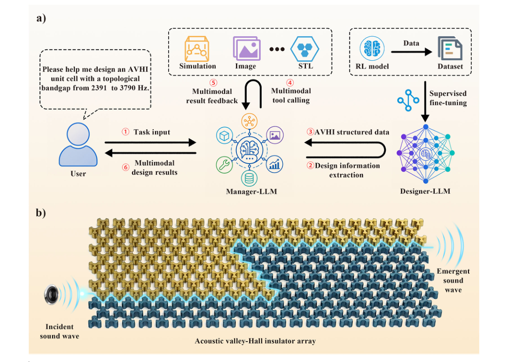
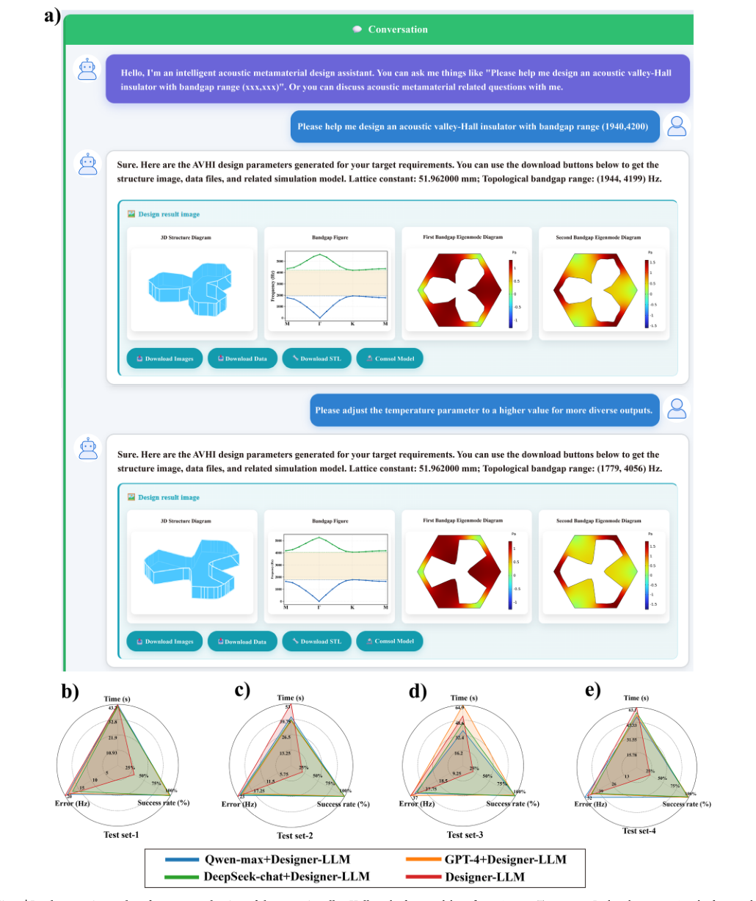
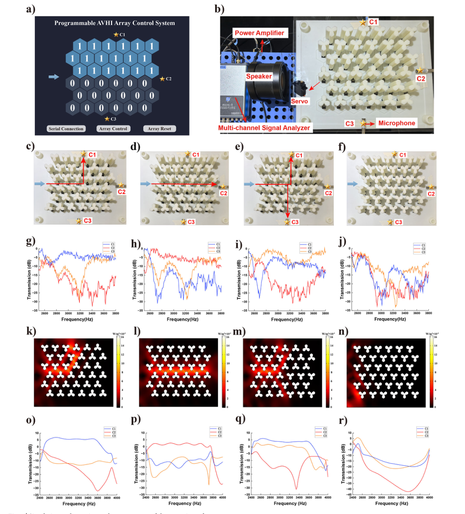

全文精读
大语言模型驱动的声学谷霍尔绝缘体逆向设计
Large language model-driven inverse design of acoustic valley-Hall insulators
解读更新 2026-10-16 15:38 · 依据论文全文整理
全文精读已完成，文章版正在逐步升级。现有内容可继续阅读。
本文提出面向声学谷霍尔绝缘体（AVHI）的双智能体逆向设计框架：Designer-LLM根据目标带隙生成结构参数，Manager-LLM解析需求并协调仿真和多模态输出。作者以强化学习构建结构—带隙数据库，并用其微调模型；测试集评估及可编程阵列实验用于检验带隙匹配与声波路径调控。作者报告实验与模拟的主要传播路径总体一致，同时指出实测带宽和响应幅值存在偏差。
研究问题
AVHI的拓扑带隙依赖散射体几何构型，目标频段因而需要针对性设计；传统拓扑优化和深度学习方法是作者讨论的既有路线。本文将问题设定为如何从自然语言带隙需求得到结构参数，并进一步完成仿真验证与多模态结果交付。作者指出，AVHI界面可支持方向性声波传输，但现有页面未提供对既有方法的定量比较结论。
方法与路线
作者构建Manager-LLM与Designer-LLM协作架构：前者解析需求、规划任务和调用工具，后者依据目标带隙生成结构参数。训练数据来自强化学习探索并经筛选的结构—带隙映射；模型以Meta-Llama-3-8B为基础，采用LoRA监督微调。工具链校验几何、重建完整单元并调用COMSOL计算能带与场分布，最终输出图表及模型文件。
创新与比较
作者的主要方法贡献是把自然语言交互、专用结构生成模型、数值模拟和可制造文件生成组织到双智能体工作流中，而非仅输出候选参数。结构数据用原几何的六分之一表示以降低参数维度，随后通过镜像和旋转对称重建完整单元。作者还报告双智能体配置的任务成功率高于单模型配置；此处是作者报告，不能据此推断所有任务均有提升。
证据与发现
作者报告筛选后的训练集包含57,556个结构，四个分层测试集各含500个样本；归一化误差在不同频率范围保持可比，作者据此认为设计精度相对稳定。架构消融中，双智能体配置成功率高于单模型配置。实体验证采用6×6可编程阵列，作者称实测与模拟的主要传播路径及频谱趋势总体一致，并展示不同阵列状态下的路径切换。
局限与边界
作者指出实验有效带宽较理想数值模型更窄，传输响应幅值也有偏差，并将其可能原因归于机械间隙、热黏性损耗、打印表面粗糙度和有限阵列边界效应。数据集与代码未公开，仅可向通讯作者合理申请，独立复核因此受限。逐页核对记录还指出P3公式(1)的文字提取存在乱码，已依据原页纠正；记录未报告原文件缺项，不应把该提取错误说成缺失公式。
方向关联
解读：该框架与智能运维、结构设计和可靠性研究的联系，在于将需求解析、参数生成、仿真验证和实体测量串成可检查的工作流。对工程应用而言，几何校验、目标频段带隙识别及实验对照可作为候选验证环节；但本文研究对象是AVHI，现有资料没有证明该流程已用于设备运维或一般结构可靠性评估。
后续研究建议
建议：后续可在获取数据与代码的前提下，独立复核带隙误差和架构消融结果，并针对实验中带宽变窄及幅值偏差分析机械间隙、材料损耗和有限尺寸因素的影响。也可进一步检验不同目标频段或设计条件下的有效性；这些属于研究建议，现有资料并未报告相关扩展实验或结果。
阅读建议
推荐关注声学超材料逆向设计、LLM智能体协作或仿真—实验闭环的读者，尤其是希望了解自然语言需求如何连接结构生成、数值验证和实体声波调控的研究者。
原图未改动。以下图注来自标注的来源，不据此补写摘要未报告的实验结论。
已取得的论文原图


原文图注与出处
Fig. 1 | Schematic of the large language model (LLM)-driven inverse-design framework and acoustic wave transport in an acoustic valley-Hall insulator array (AVHI). a Workflow of the proposed LLM-agent framework. The Designer-LLM generates corresponding AVHI structural parameters from specified target band- gaps. The Manager-LLM is responsible for semantic parsing, task planning, and
Wang, Yinchu et al.
原文图页 · CC BY 4.0


原文图注与出处
Fig. 2 | Construction of the acoustic valley-Hall insulator (AVHI) dataset and evaluation of the fine-tuned Designer-LLM. a Variation of the immediate reward with the relative topological bandgap difference between two consecutive optimi- zation steps under different values of σ. b Three-dimensional surface of the immediate reward as a function of the relative topological bandgap values at the current and previous optimization steps. c Distributions of the lower and upper band-edge frequencies of the topological bandgaps in the dataset. d Visualization of
Wang, Yinchu et al.
原文图页 · CC BY 4.0

原文图注与出处
Fig. 4 | Simulation and experimental measurement of the acoustic performance of the programmable acoustic valley-Hall insulator array. a Control system for real-time control of the encoding states of the unit cells, in which “0” and “1” correspond to two opposite valley-Hall topological phases, respectively. b Experimental setup, including a power amplifier, a loudspeaker, a multichannel signal analyzer, and measurement microphones placed at positions C1–C3. The array consists of 36 motor-driven 3D-printed unit cells. c–f Four programmable
Wang, Yinchu et al.
原文图页 · CC BY 4.0查看公开摘要
Acoustic valley-Hall insulators (AVHIs) are an emerging class of acoustic topological materials that enable robust directional wave transport and show promise for applications in communication, sensing and wave manipulation. This study presents a large language model (LLM)-driven inverse design framework consisting of two collaborative agents. The Designer-LLM is fine-tuned on an AVHI database generated through reinforcement learning to perform bandgap-targeted inverse design. The Manager-LLM coordinates task planning, semantic parsing, simulation tool invocation and multimodal result generation. With this framework, multimodal design outputs, including structural parameters, band structures, eigenmode fields, and manufacturable model files, can be generated according to concise design requirements. Bandgap error analysis on test sets indicates that the fine-tuned Designer-LLM generates AVHI structures with reliable bandgap-matching accuracy. Overall, this study proposes a modular LLM-agent framework for the inverse design of AVHIs. The framework integrates semantic interaction, AVHI inverse design, numerical verification, and multimodal result generation into a unified workflow and can provide a useful reference for future extensions to other acoustic metamaterial design tasks.